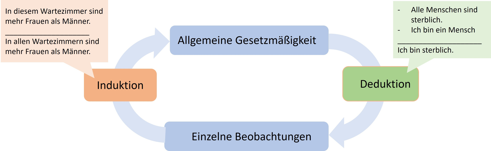
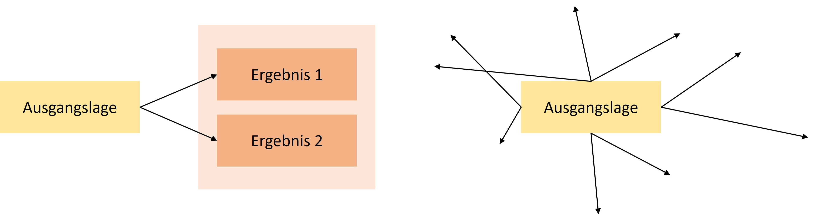
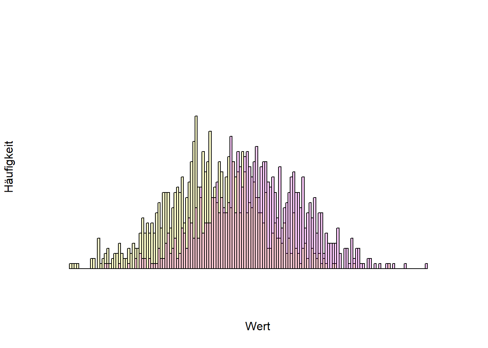
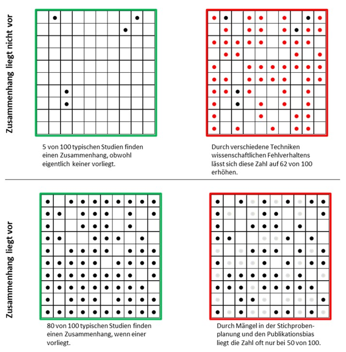
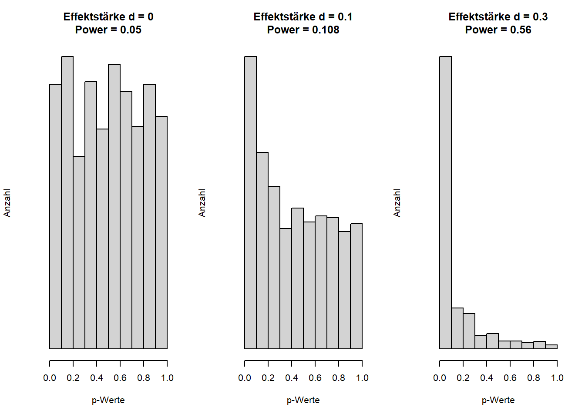
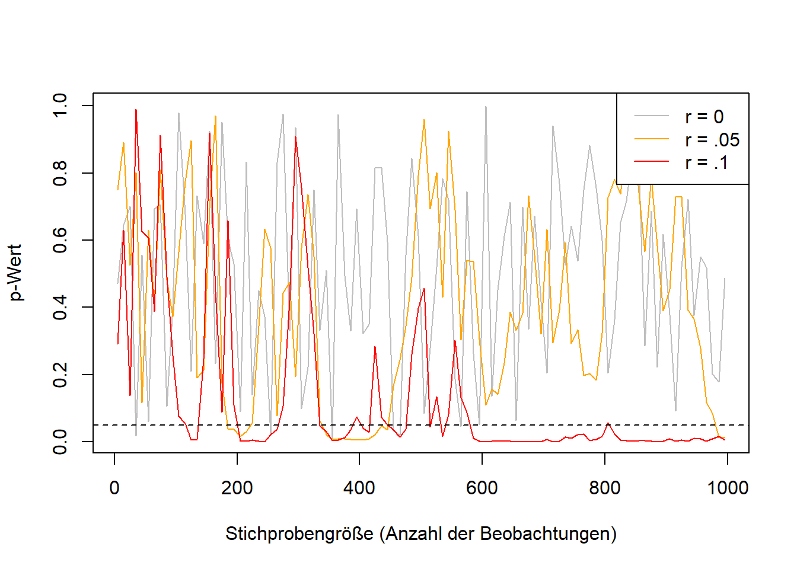

Im Alltagsdenken herrscht noch oft der Mythos, dass Wissenschaft sich von Nicht-Wissenschaft durch die wissenschaftliche Methode unterscheide. Das ist falsch (Feyerabend 1975/2002). Zwar unterscheidet sich wissenschaftliches Wissen von alltäglichem Wissen (und auch Religion) durch einen höheren Grad an Systematizität (Hoyningen-Huene 2013), allerdings gibt es weder eine einzige noch eine konstante wissenschaftliche Methode. Methoden haben sich stattdessen über die Zeit gewandelt, und das ist auch gut so. Neue Technologien ermöglichen beispielsweise in der Physik hochpräzise Messungen mittels Elektronenlaser, in den Geschichtswissenschaften 3D-Scans von Artefakten, die sonst nur wenige sehen würden, oder in den Sozialwissenschaften Datenbanken mit freiwillig bereitgestellten und anonymisierten Chatverläufen (https://db.mocoda2.de/c/home).
So wie ein Hammer und andere Werkzeuge nicht gut oder schlecht sind, so sind auch Methoden nicht gut oder schlecht, nicht richtig oder falsch, sondern sie werden angemessen und korrekt verwendet oder missbraucht. Statt Missbrauch ist in den Sozialwissenschaften von fragwürdigen Forschungspraktiken (Questionable Research Practices), kurz QRP, die Rede. Sie erlauben Wissenschaftler*innen Befunde zu generieren, die sie wollen. Im Folgenden werden verbreitete und oft angewandte (John, Loewenstein, und Prelec 2012) Techniken vorgestellt (für einen Überblick über die Forschung dazu in den letzten 50 Jahren, siehe auch Neoh u. a. (2023)).
Exploratorische versus konfirmatorische Forschung
Zum Verständnis der fragwürdigen Forschungspraktiken (QRP) ist eine wichtige forschungstechnische Unterscheidung unabdingbar: Wie bei einem Spaziergang kann eine wissenschaftliche Untersuchung erkundend oder zielgerichtet sein. Mal wird frei durch die Gegend spaziert und dabei neue Entdeckungen gemacht, mal ist das Ziel und die Route klar und im Vorhinein bestimmt. Im wissenschaftlichen Kontext ist die Rede von exploratorischer und konfirmatorischer Forschung. Bei der Exploration stehen höchstens die Forschungsfrage und grobe Züge der Methode fest, bei einem konfirmatorischen Test ist alles durchdacht: Vorgehen, mögliche Ergebnisse, sowie Erklärungsansätze für jedes mögliche Resultat. Es wird dann eine spezifizierte Hypothese mit der dazugehörigen Theorie bestätigt oder eben nicht. Kein Vorgehen ist dem anderen überlegen. Üblicherweise beginnen Untersuchungen in einem bisher wenig erschlossenen Gebiet mit Exploration, während mehr vorhergehende Forschung mit klareren Erwartungen einhergeht. Es sei dazu gesagt, dass es sich hier um Extremtypen von Forschung handelt, die ein Spektrum bilden. Es erlauben außerdem erst beide Ansätze zusammen Erkenntnisgewinn. Im Rahmen des hermeneutischen Zirkel (einfach gesagt “dem Kreis des Verstehens”) wird aus einzelnen Beobachtungen eine allgemeine Gesetzmäßigkeit formuliert (Induktion) und diese Gesetzmäßigkeit wird im Anschluss bei weiteren Einzelbeobachtungen geprüft (Deduktion). Die Deduktion kann je nach Gesetzmäßigkeit logisch notwendig sein, denn es wird von zuvor bestimmten Aussagen auf eine weitere Aussage geschlossen. Die Vorannahmen heißen Prämissen und aus ihnen folgt die Konklusion. Wenn beide Prämissen korrekt sind, muss also auch die Schlussfolgerung korrekt sein. Die Induktion ist hingegen keine Notwendigkeit [siehe Induktionsproblem; Hume (1748/2011)].

Hermeneutischer Zirkel
Problematisch wird es, wenn exploratorische Forschung als konfirmatorische kommuniziert wird, also so getan wird, als hätte eine Einzelbeobachtung eine bereits formulierte Gesetzmäßigkeit bestätigt, statt sie bloß inspiriert. Diese Art Unlogik heißt Zirkelschluss: Die Gesetzmäßigkeit gilt wegen der Beobachtung. Und die Beobachtung entspricht der Gesetzmäßigkeit.

Skizziertes und vereinfachtes Vorgehen bei konfirmatorischer (links) versus exploratorischer (rechts) Forschung. Konfirmatorisches Vorgehen bildet oft einen engen und kontrollierten Ausschnitt eines Sachverhaltes ab. Exploratives Vorgehen ist nicht zielgerichtet, die Richtung kann sich ändern, und ist manchmal mit unvorhergesehenen Ergebnissen verbunden.
Methoden der Datengenerierung
Wissenschaftliche Disziplinen bedienen sich für gewöhnlich vieler verschiedener Methoden. Idealerweise sind Erkenntnisse unabhängig von der Methode, die zu ihrer Entdeckung geführt hat und verschiedene Methoden führen zur selben Erkenntnis. Typische sozialwissenschaftliche Methoden sind die Befragung mittels standardisiertem Fragebogen, Verhaltensbeobachtung mittels Kameraaufzeichnungen und anschließender Kodierung von Verhaltensweisen durch mehrere Personen, die den Untersuchungszweck nicht kennen, indirekte Methoden (Schimmack 2019), bei welchen etwas anderes gefragt wird, als was gemessen werden soll, Verhaltensmessungen wie Blickrichtungsmessung (eye tracking), oder Simulationsstudien, mittels derer zum Beispiel Verkehrsflüsse auf Basis vorher festgelegter Prinzipien per Computer berechnet werden oder Panikattacken vorhergesagt werden (Robinaugh u. a. 2021). Diese Methoden generieren fast immer Daten, also beispielsweise eine Tabelle, in der je Beobachtungseinheit (z.B. je Versuchsperson) in mehreren Spalten Daten festgehalten werden und welche fast immer statistisch ausgewertet werden. Die Notwendigkeit einer solchen Auswertung ergibt sich daraus, dass die Beobachteten Gesetzmäßigkeiten keine absoluten Gesetze im Sinne von „alle männlichen Babys wiegen mehr als alle weiblichen Babys” sind, sondern statistische Regelmäßigkeiten im Sinne von „im Mittel wiegen kurz nach der Geburt männliche Babys ein paar hundert Gramm mehr als weibliche Babys, aber nicht jedes männliche Baby wiegt mehr als jedes weibliche Baby” sind. Ein Vergleich von Körpergrößen nach Geschlecht ist über Statista zu sehen.
In der folgenden Abbildung sind die Häufigkeiten verschiedener Werte zu sehen (Histogramm). Je weiter rechts ein Wert ist, desto höher ist der Wert (z.B. Geburtsgewicht), und je höher der Balken ist, desto häufiger kommt der Wert vor. Die gelbe und die lila farbige Verteilung überlappen einander, das heißt, dass nicht alle gelben Werte niedriger als alle lila farbigen sind. Im Mittel sind die gelben Werte jedoch geringer.
Code
set.seed(1)x <-rnorm(1000, mean =0)y <-rnorm(1000, mean =1)hist(x, xlim =c(-3, 5), col =rgb(1,1,0,.2), ylim =c(0, 40), breaks =100, xaxt ="n", yaxt ="n" , xlab ="Wert", ylab ="Häufigkeit", main ="")hist(y, add = T, col =rgb(1,0,1,.2), breaks =100)

Statistische Signifikanz
Eine der am weitesten verbreiteten Methoden in den Sozialwissenschaften (und auch darüber hinaus) ist Statistik, genauer Inferenzstatistik. Dabei wird von einer begrenzten Menge von Beobachtungen (z.B. ausgefüllte Fragebogen von 100 Personen) auf alle möglichen Beobachtungen (z.B. alle Menschen) verallgemeinert. Untersuchte Zusammenhänge sind selten eindeutig, es gibt aber häufig statistische Regelmäßigkeiten. Charakteristisch ist dabei ein gewisses Zufallselement. Wiegt man ein kürzlich geborenes männliches und weibliches Baby, dann ist die Wahrscheinlichkeit sehr hoch, dass das männliche Baby mehr wiegt. Es kommt aber auch häufig vor, dass das nicht der Fall ist. Ähnlich verhält es sich bei einer fairen Münze, also einer, die im Mittel gleich häufig auf Kopf und auf Zahl landet: Dass sie bei insgesamt vier Würfen immer auf Kopf landet, ist unwahrscheinlich, dass sie ein oder zwei Mal auf Kopf landet, es kommt aber durch aus vor (nämlich in 12,5% aller Fälle, in denen eine faire Münze viermal hintereinander geworfen wird).
Inferenzstatistische Tests gehen nun davon aus, dass bei der Betrachtung eines statistischen Zusammenhanges (z.B. Geschlecht und Geburtsgewicht, Körpergewicht und Größe, Bildungsniveau der Eltern und Bildungsniveau der Kinder) „nur der Zufall am Werk ist” (Röseler und Schütz 2022). Unter der Annahme wird berechnet, wie häufig ein beobachteter Zusammenhang mit der beobachteten Stärke vorkommen würde, wenn eigentlich kein Zusammenhang vorliegen würde. Also zum Beispiel „dass eine faire Münze vier Mal auf Kopf landet, passiert in 12,5% aller Fälle”. Bei sechs Würfen wären es 1,5625%. Die Kunst des statistischen Schließens besteht nun darin, den Punkt zu finden, ab dem Forschende davon ausgehen, dass der Zufall nicht am Werk war, weil die berechnete Wahrscheinlichkeit so gering ist. Konventionell liegt dieser bei 5%, für neue Befunde manchmal bei 0,5% (Benjamin et al., 2018), und in besonders prekären Fällen noch niedriger. Fachtechnisch wird von einem Alpha-Niveau oder einem Signifikanzniveau gesprochen und die berechnete Wahrscheinlichkeit heißt p-Wert. p-Werte unter einem bestimmten Prozentsatz (z.B. 5% in den meisten Sozialwissenschaften1) werden statistisch signifikant oder auf dem 5%-Niveau signifikant bezeichnet. Forschende würden also sagen, dass eine Münze nicht fair ist, wenn sie sechs Mal hintereinander auf Kopf landet (sogar schon bei fünf Mal, was in 3,125% der Fälle vorkommt). Dabei nehmen sie in Kauf, dass sie, wenn die Münze eigentlich doch fair ist, in 5% aller Fälle falsche Schlüsse ziehen.
Auf der anderen Seite ist es durchaus möglich, dass eine Münze nicht fair ist, zum Beispiel in 60% der Fälle auf Kopf landet und in 40% auf Zahl.

Eine einzelne Studie führt noch nicht zu sicherer Erkenntnis. Auch, wenn ein untersuchter Zusammenhang nicht vorliegt, kann er in Daten zufällig aufscheinen. Und auch, wenn eigentlich ein Zusammenhang vorliegt, kann dieser in den Daten durch Zufallsschwankungen nicht zu erkennen sein. Mithilfe von Open Science-Praktiken soll der Zustand in den linken Kästen wiederhergestellt werden. Aus Röseler, L. (2021). Wissenschaftliches Fehlverhalten [Abbildung]. https://osf.io/uf7gz/. Lizenziert unter CC BY-Attribution International 4.0.
Freiheitsgrade von Forschenden (Researchers’ Degrees of Freedom)
Vollständige Studien mehrfach durchzuführen ist sehr aufwändig. Obwohl es ein relativ sicherer Weg zu signifikanten p-Werten ist, gibt es weitaus sparsamere Lösungen. Die meisten Analysen sind um ein vielfaches komplexer als die oben beschriebene Münzwurfstudie. Betrachten wir den immer noch sehr einfachen Signifikanztest für einen Korrelationskoeffizienten. Der Koeffizient ist eine Zahl zwischen -1 und 1 und beschreibt die Art des Zusammenhanges zwischen zwei Variablen (z.B. Einkommen und Lebenszufriedenheit). 0 bedeutet, dass kein Zusammenhang vorliegt, positive Werte bedeuten, dass wenn die eine Variable hohe Werte hat, dann hat auch die andere hohe Werte, und negative Korrelationen bedeuten, dass wenn eine Variable hohe Werte hat, dann hat die andere Variable eher niedrige Werte. In Abbildung X sind verschiedene Korrelationen dargestellt.
Verschiedene Zusammenhänge zwischen zwei Variablen und deren Korrelationskoeffizienten (simulierte Daten).
r bezeichnet bei statistischen Berichten einen Korrelationskoeffizienten, nämlich üblicherweise die Produkt-Moment-Korrelation (oder auch Bravais-Pearson Korrelation). Korrelationskoeffizienten sind standardisierte Werte für den Zusammenhang von zwei Variablen. Dabei kann es sich um Intelligenz und Gehalt von mehreren Personen handeln oder um Höchstgeschwindigkeit und Gewicht mehrerer Autos. Korrelationskoeffizienten liegen immer zwischen -1 und 1. Werte unter 0 bedeuten, je höher das eine, desto niedriger das andere (negativer Zusammenhang). Werte über 0 bedeuten, je höher das eine, desto höher das andere (positiver Zusammenhang). 0 bedeutet, dass beide beteiligten Variablen unabhängig voneinander sind. Die 98 in der Klammer ist die Anzahl der Beobachtungen minus 2 und wird als Freiheitsgrade2 bezeichnet. Der Korrelationswert von .420 (bzw 0,42) bedeutet, dass ein positiver Zusammenhang beobachtet wurde. Wichtig ist außerdem, dass es nur um insgesamt positive oder negative Zusammenhang geht (Linearität). Falls also beispielsweise ein u-förmiger Zusammenhang vorliegt (unten rechts in der Abbildung), wird sich dieser nicht in der Korrelation niederschlagen.
Obwohl es sich hierbei um einen sehr einfachen Test handelt, bringt er viele Entscheidungen mit sich. Selbst nach der Datenerhebung muss entschieden werden: Welche der befragten Personen werden für den Test verwendet? Sollen Personen ausgeschlossen werden und falls ja, warum (z.B. extreme Werte oder unplausible Werte)? Wie werden die Werte der Variablen berechnet? Welcher Typ Korrelation soll verwendet werden (z.B. Bravais-Pearson, Kendall, oder Spearman)? Gibt es eine Erwartung der Richtung der Korrelation (Gerichtetheit der Hypothese)?
Diese Fragen entsprechen Freiheitsgraden – Forschende sind also dahingehend flexibel, welche Optionen sie wählen. Keine der Optionen ist per se allen anderen überlegen und jede Entscheidung lässt sich in einem gewissen Rahmen rechtfertigen. Das Problem dieser Flexibilität ist, dass die Ergebnisse von ihr abhängen und je nach den Entscheidungen kann das Ergebnis eine positive, negative, oder keine Korrelation bedeuten. Je komplexer die Untersuchung und das statistische Verfahren ist, desto größer ist auch die Flexibilität bei der Datenanalyse. An sich sind diese Freiheitsgrade nichts Schlechtes, problematisch wird es bloß dann, wenn nur diejenigen Ergebnisse dargestellt werden, die sich gut veröffentlichen lassen oder zu den Überzeugungen der Forschenden passen. Dieses Vorgehen heißt HARKing (hypothesizing after the results are known = Hypothesen aufstellen, nachdem die Ergebnisse bekannt sind) und stellt einen Zirkelschluss dar. Die Hypothese, die geprüft wurde, stammt aus den Daten, die sich natürlich bestätigen. Verschiedene Lösungswege erlauben auch die Reduktion oder komplette Auslöschung von Freiheitsgraden (z.B. Präregistrierung, siehe Kapitel XXX). Auch ist es möglich, das Vorgehen als explorativ, also nicht vorher durchdacht und vorbestimmt, zu kommunizieren.
Im Datenanalyseprozess wird die Analogie des „garden of forking paths” verwendet. In einem vereinfachten (!) Beispiel in Abbildung 4 haben wir 3x4x4x4 = 192 verschiedene Ergebnisse, die das gesamte Spektrum der Schlussfolgerungen abdecken werden – egal, ob unsere Hypothese stimmt oder nicht.
192 verschiedene Wege von einem Datensatz zum (gewünschten) Ergebnis
Demonstrationen des garden of forking paths existieren für verschiedenste Felder. Die Abhängigkeit der Ergebnisse wurde bereits für die Felder Evolutionsbiologie (Gould u. a. 2023), Sozialpolitik (Breznau u. a. 2022), Strukturgleichungsmodelle (Sarstedt u. a. 2024), und Sprachanalysen (Coretta u. a. 2023) nachgewiesen.
Tippfehler
Häufig werden Daten mittels fortgeschrittener Programme ausgewertet und die Ergebnisse werden dann mühselig in den Bericht übertragen. Hierbei entstehen schnell Tippfehler. Nuijten u. a. (2016) erstellten einen Algorithmus, der automatisch berichtete Signifikanztests erkennt, nachrechnet, und Inkonsistenzen zurückmeldet. Dabei fanden sie heraus, dass in großen Psychologiezeitschriften zwischen 1985 und 2013 in ungefähr der Hälfte aller Artikel mindestens ein Fehler war. Diese “Tippfehler” waren dabei nicht völlig zufällig, sondern fehlerhafte Werte waren meistens zugunsten positiver Befunde. Solche Übertragungsfehler passieren auch bei Meta-Analysen (Lopez-Nicolas u. a. 2022). Und selbst bei Zitationen sind Fehler nicht selten: Über verschiedene wissenschaftliche Disziplinen fanden (Smith und Cumberledge 2020), dass in 25% aller untersuchten Zitationen die zitierten Behauptungen in den Originalartikeln nicht vertreten wurden.
p-Hacking
Der p-Wert bei statistischen Tests gibt an, wie hoch die Wahrscheinlichkeit für das beobachtete Muster ist, gegeben eines zuvor angenommenen Musters. Für eine Korrelation heißt das meistens: Wie wahrscheinlich ist es, eine Korrelation der vorgefundenen Höhe zu beobachten, wenn eigentlich kein Zusammenhang (also r = 0) zwischen den untersuchten Variablen besteht. Konkret könnte das heißen: Wie wahrscheinlich ist es, dass in meinem Datensatz von 100 Personen die Korrelation zwischen Intelligenz und Alter genau r(98) = .420 ist, wenn ich eigentlich davon ausgehen, dass beide Variablen nicht zusammenhängen.
Die im Signifikanztest mitformulierte Annahme des fehlenden Zusammenhanges heißt Nullhypothese. Wenn das beobachtete Muster unter Annahme der Nullhypothese extrem unwahrscheinlich ist (oft unter 5%) wird von einem statistisch signifikanten Zusammenhang gesprochen. Wichtig ist dabei, dass Signifikanz (also „Bedeutsamkeit”) hier wirklich nur im statistischen Sinne zu verstehen ist. Die Frage, wie bedeutsam ein Befund für die Welt und das Leben ist, lässt sich mit Statistik in diesem Rahmen nicht beantworten. Weil p-Werte Wahrscheinlichkeiten sind, liegen sie zwischen 0 und 100%.
Unter den QRPs (fragwürdigen Forschungspraktiken) ist p-Hacking eine weitere Kategorie, die wiederum selbst verschiedene Techniken beinhaltet. Mit p-Hacking ist gemeint, dass Forschende ihre Freiheitsgrade nutzen, um den p-Wert „signifikant zu machen”, also unter 5% zu bringen. Eine oft fälschlicherweise gemachte Annahme zu p-Werten ist, dass hohe p-Werte für die Abwesenheit eines Zusammenhanges sprächen, oder dass p-Werte nur dann niedrig sind, wenn tatsächlich ein Zusammenhang vorliegt. Stattdessen sind p-Werte tendenziell klein, wenn ein Zusammenhang vorliegt, der auch mit der Menge der erhobenen Daten nachgewiesen werden kann. Wenn kein Zusammenhang vorliegt, sind p-Werte gleichverteilt, das heißt, alle p-Werte kommen gleich häufig vor. Im Sinne der oben genannten Definition ist von vornherein klar, dass bei 100 durchgeführten Studien tendenziell fünf einen signifikanten Zusammenhang aufweisen, wenn eigentlich keiner vorliegt. Diese Tatsache erlaubt diverse p-Hacking-Methoden. Simonsohn et al. (2014) zeigten, dass die Wahrscheinlichkeit, ein signifikantes Ergebnis zu kriegen, wenn eigentlich kein Zusammenhang in den Daten herrscht, von 5% auf ca. 60% steigen kann. Abbildung X zeigt die Verteilung von p-Werten bei verschieden hoher Teststärke (bzw. Power: der Wahrscheinlichkeit, einen Zusammenhang einer bestimmten Größe zu finden, wenn es ihn tatsächlich gibt).
p-Werte sind bei Abwesenheit von Unterschieden oder Zusammenhängen, also beim Gelten der Nullhypothese, gleichverteilt. Je höher die statistische Teststärke (Power) ist, desto weiter verschiebt sich die Verteilung in den Bereich statistischer Signifikanz.
Code
# P-Value distribution ---------------------------------------------------- layout(matrix(c(1,2,3), nrow =1)) effects <-c(0, .1, .3) for (i in effects) { effect <- i n <-100 pvalues <- (replicate(1000, t.test(rnorm(100), rnorm(100, i))$p.value)) power <-round(pwr::pwr.t.test(n = n, d = i, power =NULL, alternative ="two.sided")$power, 3) hist(pvalues , xlab ="p-Werte" , ylab ="Anzahl" , main =paste("Effektstärke d = ", i, "\nPower = ", power, sep ="") , xlim =c(0, 1) , yaxt ='n') }

Code
layout(1)
Die Chance, signifikante p-Werte zu kriegen, ohne dass die getestete Hypothese überhaupt stimmt, lässt sich durch „zerschneiden” der Stichprobe erhöhen (z.B. werden nur Frauen, Berufstätige, oder Personen, die älter als 30 Jahre sind, analysiert), durch das Erheben zusätzlicher Daten („optional stopping”), oder durch die Verwendung mehrerer zentraler Variablen (zum Beispiel wird Intelligenz mit 3 verschiedenen Tests erfasst und alle Tests werden einzeln mit Alter korreliert). Selbst das verändern kleiner Parameter in den statistischen Tests (z.B. Verwendung einer nicht-parametrischen Spearman Korrelation statt der Bravais-Pearson-Korrelation) erhöhen die Chancen auf ein signifikantes Ergebnis (siehe Tabelle Y). Einige Formen des p-Hacking lassen sich zum Beispiel hier ausprobieren: https://shinyapps.org/apps/p-Hacker/(Schönbrodt 2016). Wicherts u. a. (2016) schlagen eine Checkliste vor, um p-Hacking zu vermeiden.
Wahrscheinlichkeit für ein signifikantes Ergebnis durch die Anwendung verschiedener p-Hacking-Techniken nach Simmons, Nelson, und Simonsohn (2011), Tabelle 1. Der Anteil signifikanter Ergebnisse sollte hier den festgelegten 5% des Alpha-Fehlers entsprechen.
Technik
Anteil signifikanter Ergebnisse
Mehrere abhängige Variablen, deren Korrelation r = .5 ist
9,5%
10 weitere Beobachtungen je Gruppe erheben
7,7%
Eine weitere Variable (z.B. Geschlecht) mit in das Modell aufnehmen
11,7%
Ausschließen (bzw. Beibehalten) einer von drei Gruppen
12,6%
Alle Techniken gleichzeitig
60,7%
Daten fälschen für Dummys
Hussey und Hughes (2018) (und darauf aufbauend Sarstedt und Adler (2023)) schlugen selbstironisch bereits Methoden vor, um p-Hacking noch stärker zu erleichtern. Auf dieser Website können Benutzer*innen Zufallszahlen in dem gewünschten Bereich generieren: https://mktg.shinyapps.io/extra-p_ointless/
Selektives Berichten (Selective Reporting)
Im Rahmen der Planung einer sozialwissenschaftlichen Studie stellt sich oft die Frage, wie ein bestimmtes Konstrukt gemessen werden soll. Für Intelligenz, politischer Ansicht, Lebenszufriedenheit, und viele andere Variablen gibt es nicht den Test sondern viele Messinstrumente, die teilweise gering miteinander zusammenhängen. Gleichzeitig sind die zu testenden Theorien meist vage und diktieren nicht, mit welchem Maß ein Konstrukt gemessen werden sollte. Theorien sind den Messmethoden gegenüber also oft agnostisch, oder anders gesagt: Laut der Theorie ist es unerheblich, wie die Variable gemessen wird. Werden in einer Studie dann verschiedene Messmethoden für ein Konstrukt gewählt, müsste die Theorie über alle Tests gleichermaßen bestätigt werden. Falls das nicht der Fall ist, sollte die Theorie angepasst werden. Entgegen dieser Empfehlung und um die Chance der Publikation der Ergebnisse zu maximieren, berichten Forschende Ergebnisse oft selektiv. Statt aller Ergebnisse werden also nur die „passendsten” oder „spannendsten” berichtet. Wie oben im Thema p-Hacking und Freiheitsgrade von Forschenden klar geworden ist, führt das dazu, dass Zusammenhänge gefunden werden, die eigentlich nicht existieren. Werden zum Beispiel drei verschiedene und unabhängige Maße zum Testen einer Hypothese verwendet, steigt Wahrscheinlichkeit für mindestens ein signifikantes Ergebnis von 5% auf 14%.
Selektives Berichten: Von den hundert Korrelationen mit unzusammenhängenden Zufallszahlen sind im Mittel fünf signifikante zu erwarten - und das rein zufällig. Alle gemeinsam sind nicht signifikant. Um bessere Chancen auf eine Veröffentlichung und damit auf eine unbefristete Stelle zu ergattern, berichten Forschende häufig nur den spannendsten Teil der Ergebnisse und verzerren damit das Bild.
Führt man bei der Durchführung einer Studie nach jeder Beobachtung den Test erneut aus und betrachtet den p-Wert, dann gibt es zwei Möglichkeiten zum Verlauf der p-Werte: Falls ein Zusammenhang zwischen den erhobenen Variablen besteht, wird der p-Wert konvergieren, also sich einem bestimmten Wert annähern, nämlich 0. Die Wahrscheinlichkeit für das beobachtete Ergebnis wird mit größerer Stichprobe immer geringer. Dass eine Münze nur auf “Kopf” landet, ist ungewöhnlicher, wenn sie das 100-Mal getan hat, als wenn sie das dreimal tat. Falls kein Zusammenhang vorliegt, wird der p-Wert nicht wie oft erwartet gegen 1 gehen, sondern nicht konvergieren. Er wird dann chaotisch mal hoch und mal niedrig sein – und auch öfter mal signifikant. Diese Tatsache machen sich Forschende beim optionalen Stoppen zu Nutzen: Sie erheben so lange Daten, bis ihre Hypothese bestätigt wird. Das Problem besteht übrigens nicht für Korrelationen und andere Effektstärkemaße. Diese konvergieren je nach Größe ab ungefähr 250 Beobachtungen (Schönbrodt & Perugini, 2013).
Abbildung P
Konvergenz von p-Werten und Effektstärken je nach Effektgröße: Effektstärken (hier: Korrelationskoeffizienten) konvergieren bei großen Stichproben: p-Werte konvergieren nur, wenn die Korrelation nicht 0 ist.
Code
# P-Value Convergence ----------------------------------------------------- imax <-seq(5, 1000, 10) p0 <-NULLp1 <-NULLp2 <-NULLfor (i in imax) { set.seed(42) ds0 <- MASS::mvrnorm(n = i, mu =c(0,0), Sigma =matrix(c(1, 0, 0, 1), nrow =2)) ds1 <- MASS::mvrnorm(n = i, mu =c(0,0), Sigma =matrix(c(1, .05, .05, 1), nrow =2)) ds2 <- MASS::mvrnorm(n = i, mu =c(0,0), Sigma =matrix(c(1, .1, .1, 1), nrow =2)) p0 <-c(p0, cor.test(ds0[, 1], ds0[, 2])$p.value) p1 <-c(p1, cor.test(ds1[, 1], ds1[, 2])$p.value) p2 <-c(p2, cor.test(ds2[, 1], ds2[, 2])$p.value) } plot( y = p0, x = imax, type ="l", col ="grey", xlab ="Stichprobengröße (Anzahl der Beobachtungen)", ylab ="p-Wert") lines(y = p1, x = imax, col ="orange") lines(y = p2, x = imax, col ="red") abline(h = .05, lty =2)legend("topright", c("r = 0", "r = .05", "r = .1"), col =c("grey", "orange", "red"), lty =1)

Darstellung kalibrierter Modelle als geplante Modelle (Overfitting)
Komplexe statistische Modelle haben viele Stellschrauben. Es ist möglich, die unzähligen Entscheidungen vor Anwendung eines Modells auf Daten zu treffen, für gewöhnlich werden aber andere Kalibrationen ausprobiert und eine andere als die geplante hat eine bessere Passung. Damit ist gemeint, dass beispielsweise bestimmte Variablen mit in ein Modell aufgenommen werden, um die Vorhersagekraft zu maximieren. Zu vielen Modellen gehören sogar verschiedene Algorithmen, die auf Basis festgelegter Regeln entscheiden, wie das Modell aussehen soll. Ein Modell wird also an ein Datenmuster angepasst. Wird das Vorgehen transparent offengelegt, ist das absolut in Ordnung. Problematisch wird es, wenn das beste gefundene Modell als geplantes Modell dargestellt wird. Das in den Daten vorliegende Muster beinhaltet in sozialwissenschaftlichen Untersuchungen nämlich fast immer auch ein Rauschen, also Schwankungen, die auf Messungenauigkeiten oder andere unbekannte Einflüsse zurückzuführen sind. Diese Einflüsse schwanken definitionsgemäß (in der psychologischen Testtheorie ist zum Beispiel die Rede vom Error, einer unsystematischen Schwankung, die sich bei häufiger Messung herausmittelt). Bei zukünftigen Untersuchen wird das an die vergangenen Daten und das darin enthaltene Rauschen angepasste Modell dann notwendigerweise schlechter abschneiden, weil das Rauschen in den neuen Daten ein anderes ist. Man spricht dann von einem „überangepassten” Modell oder Overfitting.
Tendenz von Menschen, sich selbst zu bestätigen (Confirmation Bias)
Ein besonderes Problem wissenschaftlicher Methoden ist der Confirmation Bias. Das Phänomen ist in der wissenschaftlichen Literatur nicht klar definiert (Nickerson 1998), hier meine ich damit die Tendenz von Menschen (oder in diesem Kontext: Forschenden), diejenigen Muster zu finden, die sie erwarten. Der Confirmation Bias basiert auf wissenschaftlichen Befunden (Oswald und Grosjean 2004) und wurde von den Wissenschaftler*innen auf sich selbst übertragen (Mynatt, Doherty, und Tweney 1977; Yu u. a. 2014). Diese Gedanken führen nah an logischen Unsinnigkeiten und Paradoxa entlang, selbstironisch bemerkt zum Beispiel Nickerson (1998) die Möglichkeit, dass alle Befunde zu Confirmation Biases selbst nur Produkte desselben sein könnten, was die Existenz des Confirmation Biases dann wieder bestätigen würde (S. 211). Praktisch besteht die Gefahr, dass Wissenschaftler*innen nicht Wahrheiten herausfinden, sondern alles so drehen, dass ihre Vorahnungen bestätigt werden. Ludwik Fleck (1935/2015) geht in seiner Wissenschaftssoziologie, die die Grundlage für Thomas Kuhns Arbeit zu wissenschaftlichen Revolutionen (Kuhn 1970/1996) bildet, noch ein paar Schritte weiter: Er argumentiert für ein Modell des wissenschaftlichen Fortschritts, bei dem es nicht darum geht, der Wahrheit näher zu kommen, sondern nach bestem Wissen Probleme vor dem gesellschaftlichen Hintergrund zu verstehen. Das heißt nicht, dass es keine Wahrheit gibt, nur dass Wahrheit eben nicht bloß die Übereinstimmung von Aussagen mit Tatsachen ist. Statt dieser oft von Wissenschaftler*innen vertretenen Korrespondenztheorie von Wahrheit, findet sich bei Fleck eine Konsenstheorie von Wahrheit wieder: Die Übereinstimmung vieler Leute ist wichtig. Wissenschaftliche Tatsachen werden nicht von einzelnen Personen „entdeckt”, sondern von einem Kollektiv erschaffen. Der Confirmation Bias findet sich dabei so wieder, dass dem Konsens widersprechende Befunde ausgeblendet werden und auf den aktuellen Auffassungen so lange wie möglich beharrt wird. Wenngleich philosophische Wahrheitstheorien den Rahmen dieses Buches sprengen, sei darauf hingewiesen, dass keine der drei Wahrheitstheorien (Korrespondenz, Konsens, und Kohärenz) haltbar ist [Albert (2010); Münchhausen Trilemma].
Datenfälschung
Die bisher diskutierten Praktiken werden oft als fragwürdig (questionable) dargestellt. Manche Wissenschaftler*innen halten das für ein Euphemismus, denn in der Verantwortung als Forscher*in sollte genügend Wissen vorliegen, um zu erkennen, dass die oben beschriebenen Techniken nicht wissenschaftlich sind und eindeutig nicht der Generierung von Wissen dienen. Sie behindern deutlich den wissenschaftlichen Fortschritt, gefährden das Vertrauen in Wissenschaft, und führen zu enorm hohen Kosten. Unglücklicherweise sind diese Problematiken vielen Wissenschaftler*innen heute immer noch nicht bekannt. „Das haben wir halt so gelernt und schon immer so gemacht” heißt es zum Beispiel. Dass bestimmte Studien sich nicht replizieren ließen, war teilweise schon vielen Personen bewusst, sie hielten es nur nicht für möglich, das im Scientific Record festzuhalten. Jedenfalls legt der Begriff der fragwürdigen Forschungspraktiken nahe, dass sich Forschende damit in einer Grauzone bewegen würden. Meiner Ansicht nach ist das nur der Fall, da, wenn Forschende ihren Job verlieren würden, weil sie p-Hacking betrieben haben, nicht mehr viele Forschende übrig wären.
Anders ist es beim Fälschen und Manipulieren von Daten. Wie häufig Datenmanipulationen oder -fälschungen vorkommen, ist ungewiss und Schätzungen sind schwierig. In einer Meta-Analyse von Umfragen zu dem Thema wurde geschätzt, dass zwischen 0,86 und 4,45% aller Wissenschaftler*innen zugaben, Daten manipuliert zu haben. 72% gaben an, fragwürdige Forschungspraktiken anzuwenden (Fanelli 2009). Stroebe, Postmes, und Spears (2012) stellten später Beispiele von Datenfälschung zusammen und empfahlen Peer Review und Replikationen als Betrugs-Detektoren. Eine neuere und extrem umfangreiche Studie von Gopalakrishna u. a. (2021) berichtete, dass 8,3% aller Befragten Daten manipuliert oder gefälscht hätten und 51,3% fragwürdige Forschungspraktiken angewandt hätten (Tabelle 2) und bestätigte den Ausmaß der Probleme. Je nach Disziplinen kommen weitere Probleme hinzu, wie zum Beispiel die Verwendung bereits veröffentlichter biomedizinischer Bilder, die in ungefähr 3,8% aller veröffentlichten Artikel angewandt wurde, (Bik, Casadevall, und Fang 2016). Während lange davon ausgegangen wurde, dass Betrug nur in sehr seltenen Fällen geschieht, ist das Problem vor allem, dass er nur selten entlarvt wird. Wie oft Forschung “Fake” ist, wurde bisher kaum untersucht und Schätzungen variieren stark (Heathers 2024). Fälle von Betrug, die ans Licht kamen, hatten die Zurückziehung (Retraction) der jeweiligen wissenschaftlichen Artikel zur Folge und oft Konsequenzen für die wissenschaftliche Karriere der Verantwortlichen. Retractionwatch.org verwaltet die weltweit größte Datenbank zu zurückgezogenen Artikeln (Stand Dezember 2023: 49.628 Artikel): http://retractiondatabase.org/.
Sehr düster ist dabei die Tatsache, dass Methoden zur Datenfälschung einerseits immer einfacher werden (Naddaf 2023) und Wissenschaftler*innen, die Fehler aufdecken, gelegentlich verklagt werden. Beispielsweise wurden die Autoren von Datacolada.org, die bereits häufiger Probleme aufgezeigt haben, von Francesca Gino für die Veröffentlichung verklagt (https://datacolada.org/109), woraufhin tausende Wissenschaftler*innen Gelder für die finanzielle Unterstützung des Gerichtsprozesses sammelten (https://www.gofundme.com/f/uhbka-support-data-coladas-legal-defense).
Nagy u. a. (2024) listen fragwürdige Forschungspraktiken (QRP) systematisch in ihrem Bestarium auf.
Literatur
Albert, Hans. 2010. Traktat über kritische Vernunft. Nachdr. d. 5., verb. und erw. Aufl. Bd. 1609. UTB. Tübingen: Mohr Siebeck.
Bik, Elisabeth M., Arturo Casadevall, und Ferric C. Fang. 2016. „The Prevalence of Inappropriate Image Duplication in Biomedical Research Publications“. mBio 7 (3). https://doi.org/10.1128/mbio.00809-16.
Breznau, Nate, Eike Mark Rinke, Alexander Wuttke, Hung H. V. Nguyen, Muna Adem, Jule Adriaans, Amalia Alvarez-Benjumea, u. a. 2022. „Observing many researchers using the same data and hypothesis reveals a hidden universe of uncertainty“. Proceedings of the National Academy of Sciences of the United States of America 119 (44): e2203150119. https://doi.org/10.1073/pnas.2203150119.
Coretta, Stefano, Joseph V. Casillas, Simon Roessig, Michael Franke, Byron Ahn, Ali H. Al-Hoorie, Jalal Al-Tamimi, u. a. 2023. „Multidimensional Signals and Analytic Flexibility: Estimating Degrees of Freedom in Human-Speech Analyses“. Advances in Methods and Practices in Psychological Science 6 (3). https://doi.org/10.1177/25152459231162567.
Fanelli, Daniele. 2009. „How many scientists fabricate and falsify research? A systematic review and meta-analysis of survey data“. PloS one 4 (5): e5738. https://doi.org/10.1371/journal.pone.0005738.
Feyerabend, Paul K. 1975/2002. Against method. Reprinted der 3. ed. 1993. London: Verso.
Fleck, Ludwik. 1935/2015. Entstehung und Entwicklung einer wissenschaftlichen Tatsache [Formation and development of a scientific fact]: Einführung in die Lehre vom Denkstil und Denkkollektiv [Introduction to thinking style and thinking collective]. 10. Auflage. Bd. 312. Suhrkamp-Taschenbuch Wissenschaft. Frankfurt am Main: Suhrkamp.
Gopalakrishna, Gowri, Jelte M. Wicherts, Gerko Vink, Ineke Stoop, Olmo van den Akker, Gerben ter Riet, und Lex Bouter. 2021. „Prevalence of responsible research practices and their potential explanatory factors: a survey among academic researchers in The Netherlands“. https://doi.org/10.31222/osf.io/xsn94.
Gould, Elliot, Hannah Fraser, Timothy Parker, Shinichi Nakagawa, Simon Griffith, Peter Vesk, Fiona Fidler, u. a. 2023. „Same data, different analysts: variation in effect sizes due to analytical decisions in ecology and evolutionary biology“. https://doi.org/10.32942/X2GG62.
Heathers, James. 2024. „How much science is fake?“, September.
Hoyningen-Huene, Paul. 2013. Systematicity: The nature of science. Oxford studies in philosophy of science. Oxford: Oxford Univ. Press.
Hume, David. 1748/2011. Eine Untersuchung über den menschlichen Verstand [An Enquiry Concerning Human Understanding]. Bd. 5489. Reclams Universal-Bibliothek. Stuttgart: Reclam.
Hussey, Ian, und Sean Hughes. 2018. Hidden invalidity among fifteen commonly used measures in social and personality psychology. https://doi.org/10.31234/osf.io/7rbfp.
John, Leslie K., George Loewenstein, und Drazen Prelec. 2012. „Measuring the prevalence of questionable research practices with incentives for truth telling“. Psychological Science 23 (5): 524–32. https://doi.org/10.1177/0956797611430953.
Kuhn, Thomas S. 1970/1996. The Structure of Scientific Revolutions. 3. Aufl. Chicago: Univ. of Chicago Press.
Lopez-Nicolas, Ruben, Daniel Lakens, José A López-López, Marı́a Rubio Aparicio, Alejandro Sandoval-Lentisco, Carmen López-Ibáñez, Desirée Blázquez-Rincón, und Julio Sánchez-Meca. 2022. „Analytical reproducibility and data reusability of published meta-analyses on clinical psychological interventions“. PsyArXiv.
Mynatt, Clifford R., Michael E. Doherty, und Ryan D. Tweney. 1977. „Confirmation bias in a simulated research environment: An experimental study of scientific inference“. Quarterly Journal of Experimental Psychology 29 (1): 85–95. https://doi.org/10.1080/00335557743000053.
Nagy, Tamás, Jane Hergert, Mahmoud M Elsherif, Lukas Wallrich, Kathleen Schmidt, Tal Waltzer, Jason W Payne, u. a. 2024. „Bestiary of Questionable Research Practices in Psychology“.
Neoh, Michelle Jin Yee, Alessandro Carollo, Albert Lee, und Gianluca Esposito. 2023. „Fifty years of research on questionable research practises in science: quantitative analysis of co-citation patterns“. Royal Society Open Science 10 (10): 230677. https://doi.org/10.1098/rsos.230677.
Nickerson, Raymond S. 1998. „Confirmation bias: A ubiquitous phenomenon in many guises“. Review of General Psychology 2 (2): 175–220. https://doi.org/10.1037/1089-2680.2.2.175.
Nuijten, Michèle B, Chris HJ Hartgerink, Marcel ALM Van Assen, Sacha Epskamp, und Jelte M Wicherts. 2016. „The prevalence of statistical reporting errors in psychology (1985–2013)“. Behavior research methods 48: 1205–26.
Oswald, und Grosjean. 2004. „Oswald, M. E., & Grosjean, S. (2004). Confirmation bias. In R. F. Pohl (Ed.). Cognitive Illusions. A Handbook on Fallacies and Biases in Thinking, Judgement and Memory. Hove and N.Y. Psychology Press“. Unpublished. https://doi.org/10.13140/2.1.2068.0641.
Robinaugh, Donald J., Jonas M. B. Haslbeck, Oisín Ryan, Eiko I. Fried, und Lourens J. Waldorp. 2021. „Invisible Hands and Fine Calipers: A Call to Use Formal Theory as a Toolkit for Theory Construction“. Perspectives on psychological science : a journal of the Association for Psychological Science 16 (4): 725–43. https://doi.org/10.1177/1745691620974697.
Röseler, Lukas, und Astrid Schütz. 2022. „Open Science“. In Psychologie, herausgegeben von Astrid Schütz, Matthias Brand, Sabine Steins-Loeber, Martin Baumann, Jan Born, Veronika Brandstätter, Claus-Christian Carbon, u. a., 187–98. Stuttgart: Kohlhammer.
Sarstedt, Marko, und Susanne J Adler. 2023. „An advanced method to streamline p-hacking“. Journal of Business Research 163: 113942.
Sarstedt, Marko, Susanne J Adler, Christian M Ringle, Gyeongcheol Cho, Adamantios Diamantopoulos, Heungsun Hwang, und Benjamin D Liengaard. 2024. „Same model, same data, but different outcomes: Evaluating the impact of method choices in structural equation modeling“. J. Prod. Innov. Manage., April.
Schimmack, Ulrich. 2019. „The Implicit Association Test: A Method in Search of a Construct“. Perspectives on psychological science : a journal of the Association for Psychological Science, 1745691619863798. https://doi.org/10.1177/1745691619863798.
Simmons, Joseph P., Leif D. Nelson, und Uri Simonsohn. 2011. „False-positive psychology: undisclosed flexibility in data collection and analysis allows presenting anything as significant“. Psychological Science 22 (11): 1359–66. https://doi.org/10.1177/0956797611417632.
Smith, Neal, Jr, und Aaron Cumberledge. 2020. „Quotation errors in general science journals“. Proc. Math. Phys. Eng. Sci. 476 (2242): 20200538.
Stroebe, Wolfgang, Tom Postmes, und Russell Spears. 2012. „Scientific Misconduct and the Myth of Self-Correction in Science“. Perspectives on psychological science : a journal of the Association for Psychological Science 7 (6): 670–88. https://doi.org/10.1177/1745691612460687.
Wicherts, Jelte M, Coosje L S Veldkamp, Hilde E M Augusteijn, Marjan Bakker, Robbie C M van Aert, und Marcel A L M van Assen. 2016. „Degrees of freedom in planning, running, analyzing, and reporting psychological studies: A checklist to avoid p-hacking“. Front. Psychol. 7 (November): 1832.
Yu, Erica C., Amber M. Sprenger, Rick P. Thomas, und Michael R. Dougherty. 2014. „When decision heuristics and science collide“. Psychonomic Bulletin & Review 21 (2): 268–82. https://doi.org/10.3758/s13423-013-0495-z.
In der Teilchenphysik wird ebenfalls mit statistischen Modellen gearbeitet. Dabei wird statt dem 5% Signifikanzniveau (1,96 Sigma) das 5-Sigma-Kriterium verwendet, was einem Alpha-Niveau von 0.000000573% entspricht.↩︎
Die Logik hinter dem Begriff ist vergleichbar mit einer Formel mit mehreren Variablen und der Frage: “Die Werte wie vieler Variablen muss ich kennen, um die übrigen auszurechnen?”↩︎